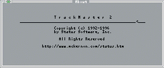

| users |
| home page |
| Absolutely the best prices on computer hardware, software, and supplies. . We are working with our communications and computer systems suppliers everyday to continuously provide the Santa Clarita business community with the best prices possible on computer hardware and software. We would greatly appreciate the opportunity to give your company or office technical support or an estimate on your computer needs in the future. Computer upgrades that can speed up your computer for faster access. |
|  |
|